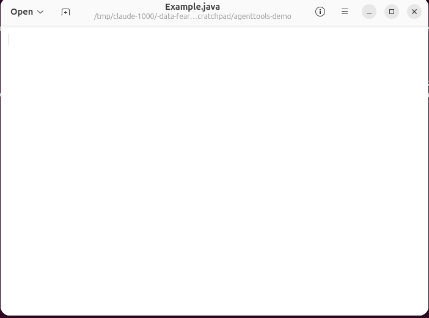
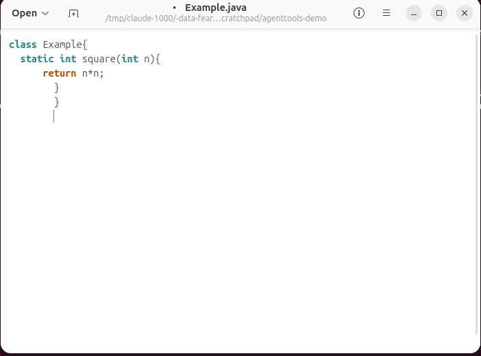

agentTools: driving the desktop by hand
A worked, example-rich guide to the Controllers agentTools package: how an agent moves the real
mouse, clicks, drags and types on this machine's actual GNOME/Wayland desktop, ending in a live demo of writing a
small Java class inside a text editor.
Where this lives
The package is agentTools inside the Controller Java module, in the
Controllers repository, under
src/agentTools (the API) and test/agentTools (its own end-to-end test). It is built and
exercised by two launchers under Coordinator/Build/src/scripts:
TestAllController.javabuilds Commons, Frontend, Coordinator and Controller and runs the manager's test suite, excludingagentTools.TestAgentTools.javabuilds the same and runs only theagentToolspackage. These tests move the real pointer, open and close real windows, and drag real files, so nothing else should be using the desktop while they run.
The four files
| File | What it is |
|---|---|
Desk.java | The interface: a screen with a pointer and a keyboard, as a person would use
them. Declares Button (left/middle/right), Key, and the four primitives
move, button, key, shot. |
Awt.java | Package-private implementation over java.awt.Robot, used when
WAYLAND_DISPLAY is unset. |
Mutter.java | Package-private implementation for a GNOME Wayland session: a
python3 -c helper, launched once and held open over stdin/stdout, drives
org.gnome.Mutter.RemoteDesktop for input and org.gnome.Mutter.ScreenCast for
screenshots on the session bus. |
Pilot.java | The public entry point. Wraps a Desk with the actions an agent
actually calls: glide, click, drag, chord, type,
shot, and the static helper changed that finds what a screenshot pair differs by. |
Desk.open()
static Desk open(){ return System.getenv("WAYLAND_DISPLAY")==null ? new Awt() : new Mutter(); }On this machine WAYLAND_DISPLAY is always set, so every agent session gets the Mutter
backend automatically; Pilot's constructor calls this for you.
The Pilot API, one call at a time
glide / click / drag
public void glide(int x0, int y0, Set<Button> held, int x1, int y1, Set<Button> then)
public void click(int x, int y)
public void drag(int x0, int y0, int x1, int y1)glide is the primitive everything else is built from: it puts the pointer down at
(x0,y0) holding exactly the buttons in held, moves it to (x1,y1) at
roughly a pixel a millisecond (so window managers and drop targets see a real drag, not a teleport), then sets the
held buttons to then. click is glide there-and-back with the left button
pressed in the middle; drag is glide with the left button picked up at the start and
dropped at the end. Example, clicking a point and then dragging from one spot to another:
try (var pilot = new Pilot()) {
pilot.click(400, 300);
pilot.drag(100, 200, 600, 500);
}chord
public void chord(Key... keys)Presses every key down in order, then releases them in reverse order — a real keyboard chord, not a
sequence of taps. The existing DesktopDragTest uses it for Ctrl+A (select all) and Alt+F4
(close window):
pilot.chord(Key.control, Key.of('a'));
pilot.chord(Key.alt, Key.f4);type — new in this guide's branch
The Key type originally only named the four keys the existing test needed
(control, alt, f4, and the letter a for Ctrl+A). Writing
arbitrary code needs every printable character, so this guide's branch turns Key from a fixed enum into
a small class with a factory, and adds Pilot.type:
final class Key{
static final Key control = new Key(0xffe3, KeyEvent.VK_CONTROL);
static final Key alt = new Key(0xffe9, KeyEvent.VK_ALT);
static final Key f4 = new Key(0xffc1, KeyEvent.VK_F4);
static final Key enter = new Key(0xff0d, KeyEvent.VK_ENTER);
...
private Key(int keysym, int code){ this.keysym = keysym; this.code = code; }
/// A key that types the given printable ASCII character: X11 keysyms for
/// 0x20-0x7e are the character's own code, unshifted.
static Key of(char c){ return new Key(c, KeyEvent.getExtendedKeyCodeForChar(c)); }
}
/// Types text one key at a time, at the position the caret already is at:
/// click there first. '\n' presses enter.
public void type(String text){
for (int i = 0; i < text.length(); i++){
var c = text.charAt(i);
var k = c == '\n' ? Key.enter : Key.of(c);
desk.key(k, true);
desk.key(k, false);
pause(30);
}
}This works because of a genuinely convenient X11 fact: the keysym for any printable ASCII character in the
0x20-0x7e range is that character's own code point, unshifted. There is no modifier bookkeeping to do
— sending the keysym for '{' types { directly, with no separate Shift press. The
change is on the branch
agenttools-typing-guide
of this fork; it keeps the existing tests passing (DesktopDragTest's Ctrl+A now reads
Key.of('a')).
shot and changed
public BufferedImage shot()
public static Rectangle changed(BufferedImage a, BufferedImage b, int r)shot() is a full-screen screenshot. changed is how an agent finds a window it just
opened without knowing where the window manager will place it: take a screenshot, open the window, take another
screenshot, and ask for the bounding box of the largest solid block that differs between them. The radius
r controls how forgiving the match is — r=0 flags any pixel that moved (catches
blinking cursors and redrawing text), r=6 only counts a pixel if its whole neighbourhood changed,
which is exactly what a freshly-opened window's edges look like, so it finds the window and ignores incidental
redraws elsewhere on screen.
Live demo: writing a Java class with the mouse and keyboard
To prove the API end to end, an agent (not a person) ran the program below against the real desktop on this machine, using the branch above. It opens GNOME's Text Editor on an empty file, clicks into the editor to place the caret, types a small Java class, saves it with Ctrl+S, and reads the saved file back to confirm it landed on disk.
try (var pilot = new Pilot()){
var before = pilot.shot();
new ProcessBuilder("gnome-text-editor", target.toString()).start();
Pilot.pause(3000);
var win = Pilot.changed(before, pilot.shot(), 6);
pilot.click(win.x + win.width/2, win.y + win.height/2);
var code = "class Example{\n static int square(int n){\n return n*n;\n }\n}\n";
pilot.type(code);
pilot.chord(Desk.Key.control, Desk.Key.of('s'));
Pilot.pause(1500);
var onDisk = Files.readString(target);
System.out.println(onDisk);
}Step by step

gnome-text-editor Example.java was launched by plain process
launch (no file-open dialog needed since the path is a command-line argument); Pilot.changed found
the new window from the two screenshots. The title bar already reads the target filename with no unsaved
dot, since the buffer is bound to that path from the start.
pilot.click put the caret in the editor and
pilot.type sent the code one keysym at a time. Note the unsaved dot before the filename in the
title bar, and the doubled indentation — see the gotcha below.pilot.chord(Key.control, Key.of('s')) sent Ctrl+S; the
unsaved dot is gone and Files.readString back in the JVM confirmed the file on disk matches what
the editor shows.What actually landed on disk
class Example{
static int square(int n){
return n*n;
}
}
The demo worked end to end — the window opened, the caret was placed with a real mouse click, every character was typed with a real keyboard event, the file saved, and the save was verified by reading it back — but the indentation is not what was sent. That is the gotcha below, kept in the guide rather than edited away, because it is the realistic result of typing literal whitespace into an editor that auto-indents.
Gotchas and reliability tips
org.gnome.Mutter.RemoteDesktop.CreateSession fails with
Session creation inhibited — which surfaces through Mutter.java's helper as a bare
NullPointerException reading a reply that never came, easy to misdiagnose as a broken pipe. Check and
clear it first:
gdbus call --session --dest org.gnome.ScreenSaver \
--object-path /org/gnome/ScreenSaver --method org.gnome.ScreenSaver.GetActive
gdbus call --session --dest org.gnome.ScreenSaver \
--object-path /org/gnome/ScreenSaver --method org.gnome.ScreenSaver.SetActive falsePilot.type sends every character
literally, including the spaces used to indent a multi-line string in the calling Java code, so each line after the
first gets the editor's auto-indent plus the literal spaces that were typed. Either type without leading
whitespace and let the editor indent for you, or strip it from each line before calling type.Pilot.changed (radius 6) to
locate it, the way DesktopDragTest and the demo above both do, rather than hard-coding coordinates.TestAgentTools.java and any hand-written Pilot session need the desktop to themselves for
the duration.glide already moves in small steps with a short pause between them
(about a pixel every 4 milliseconds) specifically so drop targets and window managers see a real drag instead of a
teleport that they silently ignore. Don't bypass it by calling Desk.move directly for anything that
needs to register as a drag.Try it yourself
- Build once: from
Coordinator/Build/src, runjava -ea --module-path ../../../Commons/Commons.jar --add-modules Commons scripts/TestAllController.java. - Make sure the screen is unlocked (see the gotcha above).
- Write a small
public static void mainin packageagentTools(itsKeyconstants are package-private on purpose — nothing outsideagentToolshas needed them so far), compile it against the built classes underout/modular/controller-testplusout/modular/mods/Commons.jar, and run it.Pilotitself ispublic. - Or run the existing end-to-end test directly:
java -ea --module-path ../../../Commons/Commons.jar --add-modules Commons scripts/TestAgentTools.javafromCoordinator/Build/src— give the desktop to it exclusively while it runs.